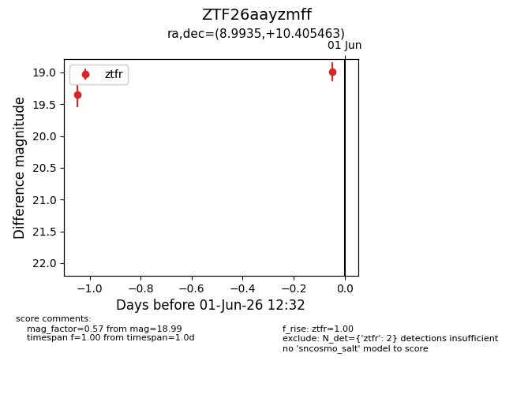
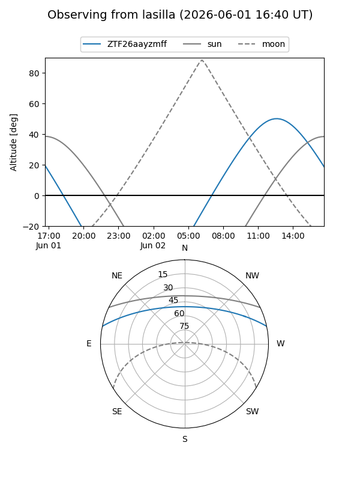
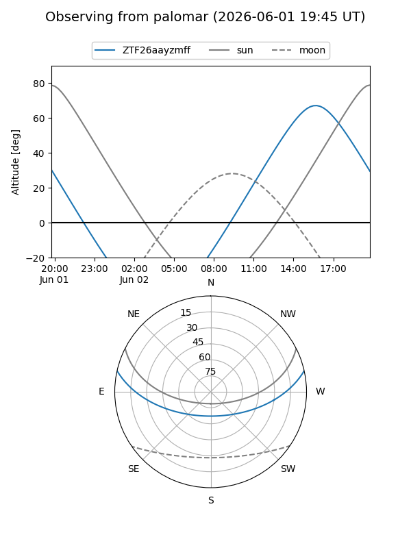

ZTF26aayzmff
Target ZTF26aayzmff at 2026-06-01 12:33
Aliases and brokers:
lsst-FINK: link
lsst-Lasair: link
lsst-ALeRCE: link
ztf-FINK: link
ztf-Lasair: link
ztf-ALeRCE: link
alt names
ZTF26aayzmff (ztf,fink_ztf)
Coordinates:
equatorial (ra, dec) = 8.9935,+10.40546
equatorial (HMS+DMS) = 00:35:58.44,+10:24:19.67
galactic (l, b) = (116.7094,-52.27935)
Flags:
Photometry:
last ztfr=18.99
2 ztfr detections
Lightcurve

Visibility


Additional plots